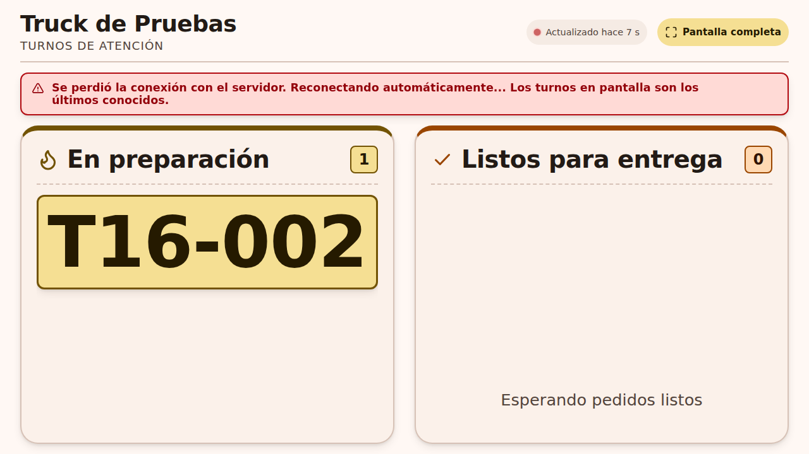
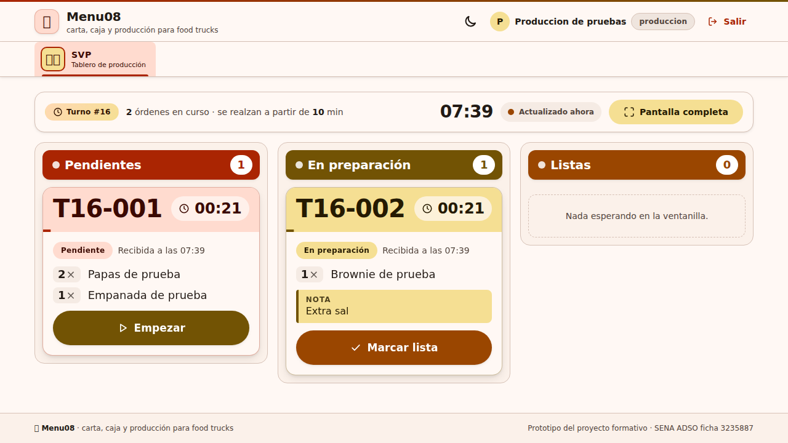
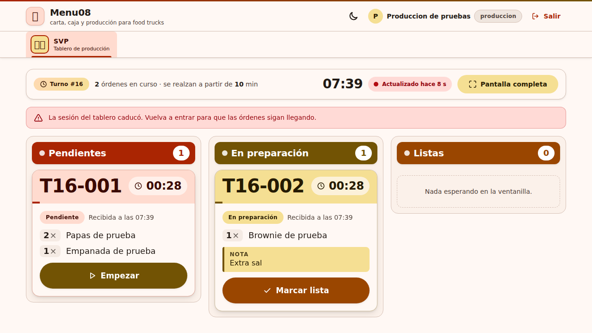
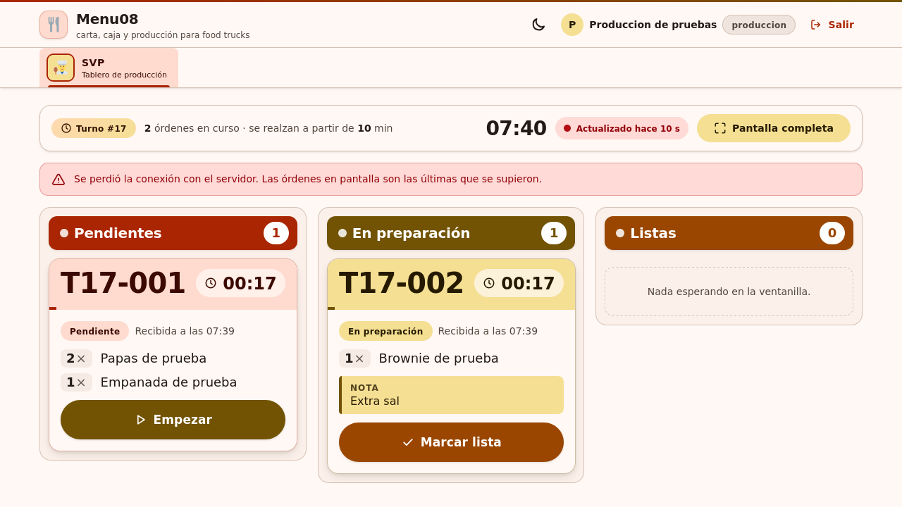
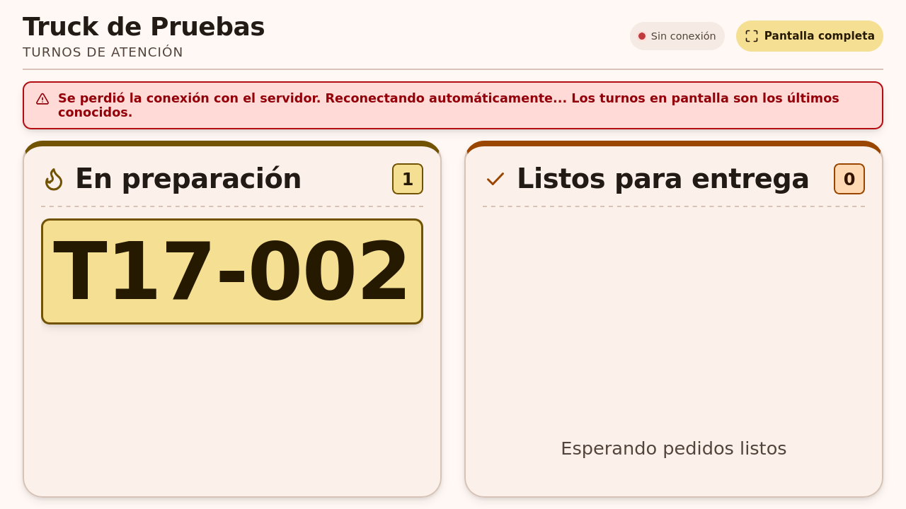
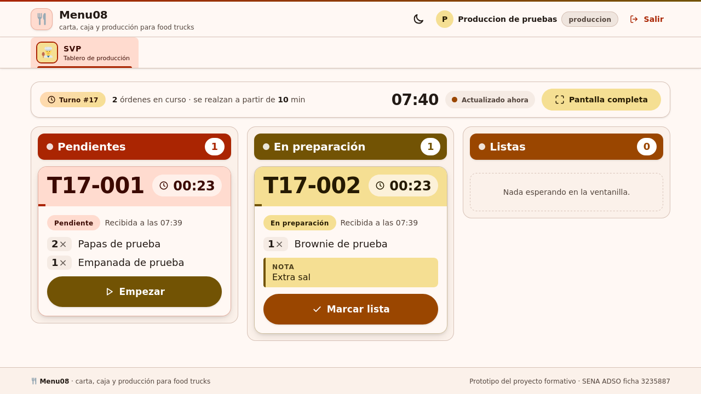

Commit: 0e7f3bc144777b1768cd9571f5f1058205fb6fe7
Fecha UTC: 2026-10-15T12:40:08.431548+00:00
Ejecuciones: EX-093, EX-106
Fuente: repositorio Menu08 y respuestas reales de las herramientas. Este informe es una representación de los registros; las capturas de aplicación aparecen al final.
Resultado esperado del caso
Ante fallo de red, las tarjetas anteriores permanecen y aparece el aviso de conexión. Al recuperarse, el aviso se oculta y los datos se reconcilian. Una respuesta 401/403 muestra que la sesión caducó y solicita reingresar; no interpreta la negativa como una lista vacía.
La pantalla pública conserva sus últimos números y señala la reconexión; los actualiza al recuperarse. Su ciclo es de 4000 ms.
Comparaciones ejecutadas
| Comprobación | Esperado | Obtenido | Resultado |
|---|
| Tarjetas conservadas | 2 | 2 | Cumple |
| Aviso interno | true | true | Cumple |
| Aviso público | true | true | Cumple |
| Recupera interno | false | false | Cumple |
| Recupera público | false | false | Cumple |
| Aviso sesión caducada | true | true | Cumple |
| Tarjetas conservadas | 2 | 2 | Cumple |
| Aviso interno | true | true | Cumple |
| Aviso público | true | true | Cumple |
| Recupera interno | false | false | Cumple |
| Recupera público | false | false | Cumple |
| Aviso sesión caducada | true | true | Cumple |
Notas de ejecución
- Navegador real automatizado en Linux; no equivale a un dispositivo Android físico.
Abrir registro JSON con respuestas HTTP y comprobaciones completas
Capturas originales de aplicación
CP-SVP-18-chromium-red-interrumpida.png
CP-SVP-18-chromium-publico-sin-red.png

CP-SVP-18-chromium-red-recuperada.png

CP-SVP-18-chromium-sesion-caducada.png

CP-SVP-18-firefox-red-interrumpida.png

CP-SVP-18-firefox-publico-sin-red.png

CP-SVP-18-firefox-red-recuperada.png

CP-SVP-18-firefox-sesion-caducada.png